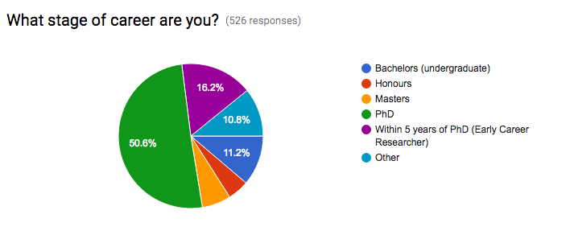

This is a statement prepared by PhD students at the UNSW Climate Change Research Centre. If you agree with what we've said, please sign the statement and share it widely within your network.
As of 12 April 2016, there are over 500 responses. We'll continue to update this page as we receive them.
The statement
As students and young researchers, the recent CSIRO cuts to climate science highlight a disconnect between the words and actions of national science policy. This disconnect has serious ramifications for Australia’s future prosperity.
Our current political leaders emphasise the importance of advancing Australia’s capability in Science, Technology, Engineering and Maths (STEM) fields. But repeated funding cuts, chaotic restructuring of our key research organisations and the lack of a national strategy or a long-term plan for scientific research in Australia suggest this is no more than lip service.
Working at the cutting edge of scientific research requires almost a decade of university education, funded by the taxpayer and at significant personal cost. In light of the instability of research careers in Australia, there is a growing expectation among students that to attain stable employment, we must move overseas.
Rather than building Australia’s scientific capacity after years of study we will be building the future capacity of other nations, while the cost of our training is borne here.
Fundamental scientific research is the foundation of transformative innovations, but a lack of job security and policy direction may give pause to any bright passionate kids considering a career in science.
Key researchers who played an important part in the discovery of gravitational waves have been made redundant. World leading climate scientists are being let go and Australia’s own climate model is under threat. Half of Australia’s permanent climate research capacity will be gone as a result of the CSIRO cuts.
We cannot rebuild this capacity in an instant. It will take decades.
In light of what these recent events mean for Australia’s future science and innovation capacity we call on our political leaders to come together and forge a bipartisan, national, long-term plan for scientific research in Australia. This plan must:
- Provide a clear, stable career path for scientists within Australia and introduce a long-term funding model for foundational research. Three year grants do not fulfil this need.
- Recognise that taxpayer funded organisations like CSIRO cannot focus solely on profitable industry research at the expense of long term research for the public good.
- Produce policy incentives to encourage business to undertake more industry-focused research and development.
This change needs to happen now before we further undermine Australia’s fundamental scientific capacity. As the people who will drive the scientific breakthroughs in the future, young researchers like ourselves call on the government to put forward a comprehensive plan for science research in Australia now.
Prepared by Arden Burrell, Mia Gross, Steefan Contractor, Mathew Lipson, Chiara Holgate (ANU) and James Goldie. For enquiries, contact Arden at arden.burrell@unsw.edu.au.
The Undersigned
The signatories of this statement are expressing person opinion. This letter does not reflect the official opinion of their associated institutions.
| Name | Specialisation | Institution |
|---|---|---|
| Aaron Wu | International Law | The London School of Economics |
| Adam Haber | Computational Biology | Broad Institute |
| Adam Kilpatrick | Ecology, Remote Sensing, GIS, Spatial Modelling, Remotely Piloted Aircraft Systems | The University of Adelaide |
| Adele Morrison | Oceanography | Princeton University |
| Al Usher | I had to give up research for job security | Australian Academy of Science |
| Alejandro Di Luca | Climate science | UNSW |
| Alex Peck | Economics | Macquarie University |
| Alex Sen Gupta | Oceanography | University of New South Wales |
| Alexander Baldacchino | Undergraduate | UNSW |
| Alexander Norton | Climate Science | University of Melbourne |
| Alexandra Auhl | Ecohydrology & Environmental Management | UNSW |
| Alexis Burrett | Ecology | |
| Alice Barthel | Physical Oceanography | University of New South Wales |
| Alice Huang | PhD | University of Sydney |
| Alistair Stewart | Wildlife Ecology | Northern Territory Government |
| Amelia Gontar | Mathematics | Flinders University |
| Amelie Jeanneau | Remote sensing applied to erosion modelling | |
| Andrea Dittus | Climate Science | University of Melbourne |
| Andrea Pianella | Sustainable cities | The University of Melbourne |
| Andrea Taschetto | Climate variability | University of New South Wales |
| Andrew Brown | Climate Science | University of Melbourne |
| Andrew Chn | Fisheries | James Cook University |
| Andrew Geschke | Environmental Science (ecology) | Deakin university |
| Andrew Giles | Geosciences | Monash University |
| Andrew Gunn | Physical Oceanography | The University of Tasmania |
| Andrew Harford | Environmental toxicology | Department of the Environment |
| Andrew Hennessy | Environmental Biology | University of Adelaide |
| Andrew King | Climate science | University of Melbourne |
| Andrew Prata | Satellite Remote Sensing | Monash University |
| Andy Bodsworth | Sustainable Fisheries and Healthy Oceans | Private consultant |
| Andy Jobst | Hydrology | Otago University |
| Angela Liu | Aquaculture | University of New South Wales |
| Anita Gisch | IT | UTS |
| Anita Perkins | Biogeochemistry | |
| Anna Farmery | Environmental Impacts of Food Production | IMAS, University of Tasmania |
| Anna Richards | Plant Ecology | |
| Anne O'Brien | Philosophy | Australian Catholic University |
| Annette Hirsch | Climate Science | ETH |
| Anthony Kung | Environmental management | University of Queensland |
| Arden Burrell | Climate Science | UNSW |
| Ariaan Purich | Climate science | UNSW |
| Asha Vijayeta | Climate change ,ENSO | Monash university |
| Aysha Fleming | Social research into Sustainability | |
| Bahram Sediqi | Medical Science | UNSW Australia |
| Barb Tyler | Climate change | |
| Ben Buchler | Physics | |
| Ben Jarihani | Hydrology | University of Sunshine Coast |
| Ben Swift | Computer Science | ANU |
| Benjamin M Roberts | Physics | UNSW Australia |
| Bernadette Walker | Marine and Antarctic Science | University of Tasmania |
| Bertram Ostendorf | Environmental Sciences | Univerisity of Adelaide |
| Bethany Ellis | Palaeoclimate | Australian National University |
| Bhupendra Raut | Atmospheric Sciences | Monash University |
| Bianca Kallenberg | Climate change | ANU |
| Blanche D'Anastasi | Marine Conservation Genomics and Ecology | James Cook University |
| Bradley Lane | Cities | |
| Brendan Hanger | Mantle Processes/Earth Science Education | Australian National University |
| Brook Dambacher | Undergraduate | UTAS |
| Bryce Kelly | Earth and Environmental Sciences | UNSW Australia |
| Byju Pookkandy | Climate Science | Monash University |
| Caitlin Buckle | Human Geography | University of New South Wales |
| Caleb Maru | Bachelors (undergraduate) | University of South Australia |
| Calum Robertson | General Relativity | Monash University |
| Cameron Dover | Molecular photonics | UNSW |
| Cameron Henderson | Atmospheric Science | Monash University |
| Cameron Lewis | Atmospheric Science | Monash University |
| Campbell Young | Coastal Geomorphology | University of Wollongong |
| Carlos Rocha | Oceanography | UNSW |
| Carol Henderson | Horticulture | Melbourne University |
| Carol Kaschula | enzymology | |
| Caroline Delaisse | Botany | University of Western Australia |
| Cassandra Chakouch | Neuroscience and Psychology | UNSW |
| Cassandra Rogers | Urban climate (heatwaves) | Monash University |
| Cayne Layton | Marine ecology | University of Tasmania |
| Cecilia Villacorta-Rath | Marine biology (population genetics) | University of Tasmania |
| Celine Nobel | Hydrology | VU University Amsterdam |
| Cesar Azorin-Molina | Spanish National Research Council | |
| Charles Maddison | Social Work | Flinders Uni |
| Chas Savage | Communications | |
| Cherry May Mateo | Hydrology and Water Resources | |
| Chiara Holgate | Land surface processes | Australian National University |
| Cho Kwong Charlie Lam | Urban climate | Monash University |
| Chris Turnadge | Hydrogeology | |
| Christoph Rudiger | Environmental Monitoring | Monash University |
| Christoph Rupprecht | Geography | |
| Christopher Bull | Oceanography | Climate Change Research Centre, UNSW |
| Christopher Chapman | Physical Oceanography | LOCEAN-IPSL (France) |
| Christopher Denes | Virology | Westmead Institute for Medical Research |
| Christopher Roach | Oceanography | University of Hawaii |
| Christopher Thomas | Mathematics | UNSW |
| Cindy Liles | Geography | Newcastle university |
| Claire Brandenburger | Evolution of introduced plants | University of New South Wales, Australia |
| Claire Fisk | Environmental Science and Remote Sensing | University of Adelaide |
| Claire Mason | Societal Impacts of Digital Technology | |
| Claire Treilibs | Ecology | Flinders University |
| Claire Williams | Law / Climate Science | Adelaide University |
| Clara Graham | Ecology and Veterinary Science | |
| coen van tuijl | ecology | |
| Corrado Corradini | Hydrology | Dept. Civil and Environmental Engineering - UNI Perugia (Italy) |
| Courtney Leigh | GIS | Monash University |
| Cristina Aponte | Ecology | University of Melbourne |
| Damon Bolton | Marine Ecology | The University of New South Wales |
| Daniel Garner | Undergraduate | University of New South Wales |
| Daniel Kilgore | Environmental chemistry | Macquarie |
| Daniel Lambert | Photovoltaics engineering | University of New South wales |
| Daniel Noble | Evolutionary Biology | UNSW |
| Daniel Novikov | Paychology | Sydney university |
| Danya Rose | Dynamical systems (applied mathematics) | University of Sydney |
| Darren Koppel | Environmental Chemistry and Toxicology | CSIRO Land and Water |
| David Batten | Industrial ecology | The Temaplan Group (Consultants) |
| David Cortie | Physics | ANU |
| David Le Maitre | Invasive plant impacts and managment | CSIR, South Africa |
| Davide Di Mauro | Environmental Science | University of the Sunshine Coast |
| Dean Howard | Atmospheric science | Macquarie University |
| Debbi Delaney | Work in the catchment management sector | |
| Declan Page | Water Recycling | |
| Denis Stojanovic | Earth Sciences | University of Queensland |
| Denisse Fierro Arcos | Marine Science | The University of Western Australia |
| Dianne Jolley | Chemistry | University of Wollongong |
| Dorothy Turner | Environment Science | The University of Adelaide |
| Dr Chris Pittock | Plant Science | Victorian Govt R&D |
| Dr Joe Walker | Hydroecology | |
| Duncan Sutherland | Fluid Dynamics | Victoria Uni |
| Dylan McConnell | Renewable Energy Integration | Melbourne Energy Institute |
| Edwin Clatworthy | Chemistry | USYD |
| Efthymios Nikolopoulos | Hydrometeorology | University of Athens |
| Elaine Fernandes | Climate Change Adaptation | Monash University |
| Elena Angelides | Undergraduate | UNSW |
| Elisa Destro | Hydrology | University of Padova |
| Elisa Holgate | Water engineering/ecology | UNSW |
| Elisabeth Vogel | Earth Sciences | University of Melbourne |
| Emi Tanaka | Statistics | University of Wollongong |
| Emily Berry | Environmental Management | The University of New South Wales |
| Emily Goodale | Land- atmosphere interactions | University of Western Australia |
| Emily Kain | International Studies | University of wollongong |
| Emily Ly | Finance and Economics | UNSW |
| Emma Ligtermoet | Human Geography | ANU |
| Emma Ly | Bachelors (undergraduate) | |
| Eric Darling | Business - Project Management | University of Southern Queensland |
| Erica Spain | Geophysics | Institute of Marine and Antarctic Studies |
| Esteban Abellan | Variability (Climate Sciences) | University of New South Wales |
| Eva Cougnon | Physical oceanography | Institute of Marine and Antarctic Studies |
| Eve Slavich | Statistics | UNSW |
| Evgeny Zavarygin | Astrophysics | UNSW |
| Fabio Dias | Ocean heat content and sea level projections | UTAS |
| Felicity Hatton | Ecology | University of Canberra |
| Frances Alexander | Ecotoxicology | Australian Antarctic Division and Southern Cross University |
| Francesco Marra | Hydrometeorology | |
| Gabriel Paiva Lago | Land and water contamination | UTS |
| Gabriela Arcoverde | Environmental Science | |
| Gabriella Macoustra | Environmental toxicology | University of Wollongong |
| Gareth Kennedy | Astrophysics/Geophysics | University of Melbourne |
| Gareth White | Mathematics | The University of Sydney |
| Genevieve Rankin | Biological science | UNSW |
| Gennady Bracho Mujica | Climate risk management in agriculture | |
| Geraud Sansom | Medicinal Chemistry | University of Wollongong |
| Gilad Bino | Ecology | UNSW |
| Gina Seres | Electrical Engineering | University of New South Wales |
| Gio Fichera | Managing Invasive Species Impacts | |
| Giulia Roncon | Marine Mammals | IMAS |
| Glen Oberman | Mathematical Physics | Queensland University of Technology |
| Gordon McDonald | Physics | Australian National University |
| Graeme Newell | Applied ecology / spatial analysis | Arthur Rylah Institute for Environmental Research |
| Graham Kettlewell | Atmospheric Chemistry | University of Wollongong |
| Greg Skilleter | Effects climate change & other human activities on coastal biodiversity | University of Queensland |
| Haifeng Zhang | Ocean Remote Sensing & Climate Change | UNSW Canberra |
| Hannah Beder | Computer Science | UNSW |
| Hannah James | Earth Sciences | ANU |
| Hanne Nielsen | Antarctic Studies | University of Tasmania |
| Hans-Marius Holst-Hansen | Management | Melbourne University |
| Harley Scammell | Physics | UNSW |
| Hayden Lobry | Undergraduate | UNSW |
| Hayden Schilling | Biological Science/Fisheries Science | UNSW Australia |
| Helen White | Climate Adaptation Ecology | UWA |
| Henry Zheng | ||
| Hu Hsin Su | Climate Systems Science | UNSW |
| Hung Trieu | Forestry | University of Tasmania |
| Hylke Beck | Global Hydrology | Joint Research Centre (JRC) |
| Indi Hodgson-Johnston | Antarctic & Southern Ocean Law & Policy | Institute for Marine & Antarctic Studies, University of Tasmania & Antarctic Climate & Ecosystems CRC |
| Ingrid Ahmer | Spatial Modelling | The University of Adelaide |
| Irit Gross | Education | Department of Education |
| Isabella Murphy | Science | UNSW |
| Ishraq Uddin | Mathematical biology | University of Sydney |
| Iurii Shendryk | Remote Sensing | UNSW |
| Jacinta Green | Ecology | UNSW |
| Jack Moon | Pure Mathematics | The University of Sydney |
| Jackie Webb | Biogeochemistry/micrometerology/hydrology | Southern Cross University |
| Jacqueline Pengelly | Masters | Deakin University |
| James Bezzina | Physical Chemistry | University of Wollongong |
| James Black | Ocean Acidification | Institute of Marine and Antarctic Stuudies |
| James Camac | Ecology | Macquarie university |
| James Cleverly | Ecohydrology | University of Technology Sydney |
| James Esdaile | Masters | UNSW |
| James Goldie | Climate Science | University of New South Wales |
| James Harding | Space Physics | The University of Sydney |
| James Mccallum | Humanities | UTS |
| James West | Material Flows Analysis | |
| Jamie | Engineering | JCU |
| Jamie David | Coastal Biogeochemistry | Southern Cross University |
| Jan Jansen | PhD | University of Tasmania, Institute for Marine and Antarctic Studies |
| Jane Addison | Social ecology | |
| Jane Younger | Zoology | Oxford / Loyola University Chicago |
| Janine Ledet | Evolutionary Biology and Marine Ecology | University of New South Wales |
| Jatin Kala | Land-Atmosphere interactions | Murdoch University |
| Javier Navarro | Geography, Environmental Analysis | The University of Queensland |
| Javier Porobic | Ecosystem-Based Management | IMAS |
| Jean-Baptiste Pichancourt | STEM integration for forestry, ecology and biocultural diversity | |
| Jennifer Prichard | Earth Science | Australian National University |
| Jennifer Wurtzel | paleoclimate | ANU |
| Jess Ericson | Krill Biochemistry | Institute of Marine and Antarctic Studies |
| Jesse Greenslade | Atmospheric Chemistry | University of Wollongong |
| Jessica Amies | Palaeoclimate | ANU |
| Jessica Frawley | IT | UTS |
| Jessica lye | Medical physics | |
| Jessica Merrett | Marine debris | UNSW |
| Jessica Pizarro | Climate change in uranium mining | |
| Jiawei Bao | Climate science | UNSW |
| Jie He | Climate Change and Ecohydrology | |
| Jinglin Zhao | Astrophysics | UNSW |
| Joan llort | Marine biogeochemistry | IMAS |
| Joanne Jaworowski | Political will & voting | None |
| Joel Vergunst | Geoscience | Monash University |
| John Carter | Ecology | DSITI |
| John Kandulu | Economics | University of Adelaide |
| John Pengelly | Water Chemistry | La Trobe University |
| John Porter | Environment Research and Management | University of NSW |
| José A. Guijarro | Climatology | AEMET |
| Josephine Ward | Geology | ANU |
| Joshua Larsen | Hydrology | University of Queensland |
| Joshua Pandong | Wildlife Conservation | |
| Jozef Syktus | Global Change & Climate Science | Global Change Institute, UQ & QLD Government |
| Judith Rosentreter | Coastal Biogeochemistry | Southern Cross University |
| Julia Prior | software development practice, HCI | University of Technology Sydney |
| Julian Ratcliffe | Materials Engineering | Monash University |
| Juliana Pille Arnold | Ecology | University of Western Australia / CSIRO Floreat |
| Julie Janssens | Antarctic biogeochemistry | UTAS, IMAS, ACE-CRC |
| Juliet Sefton | Palaeoclimate | Victoria University of Wellington |
| Justin McCann | Environmental Science | UNSW |
| Kaitlin Alexander | Climate Science | University of New South Wales |
| Kaitlyn Higgins | Biology/Environmental Science | University of Tasmania |
| Kaitlyn Lieschke | Atmospheric Chemistry | University of Wollongong |
| Kara Youngentob | Environmental Science and Ecology | ANU |
| Karina Gutierrez | Hydrogeology | Flinders University |
| Karina Hudson | Physics | UNSW Australia |
| Kate de Smeth | Hydrology | Engineering consultancy (international) |
| Kate Markham | Environmental Sciences and Policy | Clark University |
| Katherine Holland | Biogeochemistry | The Australian National University |
| Katherine Phan | Microbiology | University of Sydney |
| Kathleen Humble | Mathematics | |
| Kathryn Waldron | Particle technology | Monash |
| Kathryn White | Physical chemistry | Merici College, ACT |
| Katie Garsia | Undergraduate | Western Sydney University |
| Katrina Szetey | Fisheries sustainability | Monash University |
| Keir Williams | 3d Computer Graphics | Self-employed |
| Kelsey Rydar | Archaeology | Australian National University |
| Kelsie Long | Archaeology and geochemistry | Research School of Earth Sciences |
| Kendra Luong | Honours | UNSW |
| Kerry Nice | Urban climate and urban vegetation modelling | Monash University |
| Khalil Cheikh-Hussein | Astrophysics | UNSW |
| Kim Brinklow | Nursing | |
| Kim Chau Le | Microbiology | University of Sydney |
| Kirsten Broadgate | Environmental tox | Environmental Consultancy |
| Kit Tam | Honours | ANU |
| Kristen Karsh | Marine Science | Antarctic Climate & Ecosystems CRC |
| Krystle keller | Marine science | UNSW |
| Kundo Hundang | Ecological Health | The Papua New Guinea University of Technology |
| Lachlan Grose | Geoscience | Monash University |
| Lachlan Magree | Atmospheric Science | Monash University |
| Lachlan Stoney | Meteorology | The University of Melbourne |
| Laura Levetan | Ecological economics | University of Melbourne |
| Laura O'Brien | Atmospheric Science | Monash University |
| Laura Stoltenberg | Coral Reef Biogeochemistry | Southern Cross University |
| Lauren Roman | Marine Science | Institute for Marine and Antarctic Studies |
| Lauren Smith | Cardiac proteomics | University of Sydney |
| Lauren Taylor | Undergraduate | UNSW |
| Laurence Berville | Biological invasions | |
| Leah Bullen | Creative Arts | ANU |
| Lei Cheng | Hydrology and Climate Change | CSIRO |
| Leonie Kiewiet | Hydrology | University of Zurich |
| Libaros Damien | Oceanography | IMAS |
| Liesl Grant | Marine Biology | Macquarie University |
| Lindsay B. Hutley | Land-atmosphere interactions | Charles Darwin University |
| Lisa Caripis | Climate Law | Melbourne Law School |
| Luana Tommasi Vittorazzo | Oceanography | University of New South Wales |
| Lucas Silva | Marine Biology | UNSW |
| Lucy Carter | Research for Development | CSIRO |
| Luke Gamon | Chemistry | The University of Melbourne |
| Luke Harrington | Climate Dynamics | Victoria University of Wellington |
| Luke Short | Climate Change Adaptation | Sunshine Coast University and Council |
| Luke Steller | Geochemistry (Astrobiology) | UNSW |
| Luwei Yang | Physical oceanography | Institute for Marine and Antarctic Studies (UTAS) |
| Lynne Bean | Earth Sciences | Australian National University |
| M Y | Remote Sensing of Vegetation | Australian National University |
| Madeline Green | Genetics | |
| Madi Rosevear | Ice/Ocean interactions | UTAS |
| Magnus Moglia | Urban Systems | |
| Mahmood Sadat-Noori | Biogeochemistry/Hydrology | Southern Cross University |
| Mainak Mondal | Geophysical Fluid Dynamics | The ANU |
| Mal Wilson | Structural Engineering effects of climate change | Advanced Structural Designs |
| Mana Inoue | Palaeoclimatorogy | Antarctic Climate & Ecosystem CRC |
| Mandy Hoskin | Freelance | Adelaide University |
| Marco Borga | Water Resources | University of Padova |
| Marissa Parry | Environmental Epidemiology | Climate Change Research Centre, University of New South Wales |
| Mark Read | Computational Biology | University of Sydney |
| Mark Thomas | Soil science | |
| Markus Donat | Variability of Climate Extremes | UNSW Australia |
| Martin Bergemann | Atmospheric Science | Monash University |
| Mathew Lipson | Climate Science | University of New South Wales |
| Matt Rees | Ecology | Queensland University of Technology |
| Matthew Chick | Fire Ecology | University of Melbourne |
| Matthew Jones | Political Science | University of Greenwich |
| Matthew Rendell | Physics | UNSW |
| Matthias Nachtschatt | Biosciences | QUT |
| Max E Easton | Chemistry | University of Sydney |
| Maximilien Desservettaz | Atmospheric chemistry | University of Wollongong |
| Megan Gillmore | Environmental toxicology | CSIRO Land and Water |
| Melinda Trudgen | Plant Biology | UWA |
| Melissa Fedrigo | Forestry and Remote Sensing | James Cook University |
| Melissa Van De Wetering | Insect Ecology | La Trobe University |
| Melissa Winkelmolen | Nursing | University of Notre Dame Sydney |
| Mellora Sharman | Veterinary Science | Animal Health Trust |
| Meng-Ping Hsu | PhD | University of Sydney |
| Merel Bedford | Ecosystem Modelling | University of Tasmania |
| Mia Gross | Climate science | UNSW Australia |
| Michael Archer | Palaeontology, Palaeoclimatology, Conservation | University of New South Wales |
| Michael Horvath | Chemistry | UNSW |
| Michael Pengelly | Exercise Science | Victoria University |
| Michael Short | Water resources | The Australian National Unversity |
| Michael Swinbourne | Wildlife Science | University of Adelaide |
| Michelle Grosser | Geology | Unemployed scientist |
| Michelle La | Undergraduate | Freelancer |
| Michelle Pickrell | Design | UTS |
| Miranda Nieboer | Antarctica, Architecture & Humanities | IMAS |
| Mitchell Kirby | Ecological Economics | Southern Cross University |
| Morgan Williams | Geochemistry | The Australian National University |
| Murray Peel | Hydroclimatology | Infrastructure Engineering, University of Melbourne |
| Nadja Herger | PhD | CCRC (UNSW) |
| Narissa Bax | Marine Biology | Institute for Marine and Antarctic Studies, University of Tasmania |
| Natalie Rogers | Psychology and Paleoanthropology | UNSW Australia |
| Nathan Cooper | Climate and Health | UNSW |
| Nathan Eizenberg | Atmospheric Reanalysis | Australian Bureau of Meteorology |
| Nathan W Burke | Ecology | UNSW |
| Ned Haughton | Climate Science | University of New South Wales |
| Nhat Nguyen | ||
| Nicholas Butler | Synthetic Chemistry | University of Wollongong |
| Nicholas Herold | Paleoclimate/climate extremes | UNSW |
| Nicholas McCarthy | Bushfire Weather | University of Queensland |
| Nicholas Perkins | Benthic Ecology | IMAS University of Tasmania |
| Nicholas Pittman | Oceanography, Ocean Heat Content | University of Tasmania |
| Nick Grosfeld | Australian Rainfall Variability | UNSW |
| Nicola Maher | Climate Science | UNSW |
| Nicola Poole | Nutrition | Deakin Uni |
| Nigel Beebe | Molecular Bioloby | University of Queensland |
| Pam Michael | Conservation oceanography, seabirds, fleet dynamics | Institute for Marine and Antarctic Studies |
| Patrick Carr | Earth Sciences | Australian National University |
| Paul Abbott | Physics | University of Western Australia |
| Paul Lennox | Regional geology, petroleum geology and granite studies | The University of New South Wales |
| Pauline Huang | Biochemistry | Studied- Sydney University; Work - Melbourne University and La Trobe University |
| Pearse Buchanan | Palaeoclimate Modelling | Institute for Marine and Antarctic Studies |
| Penelope Maher | Climate | Exeter |
| Pepijn van Ravesteyn | Hydrology | VU university Amsterdam |
| Perry Johnson | Industry Energy Efficiency Methods | Sydney University |
| Peta Cox | Social science | ANROWS |
| Peta Wolifson | Geography | UNSW |
| Peter Campbell | Proteomics/general biochemistry | CSIRO |
| Peter Gibson | Climate Science/ Climate Extremes | UNSW |
| Peter Uhe | Climate Modelling | University of Oxford |
| Phillip West | Molecular Biology | University of Sydney |
| Pierrick Bourgeat | Image Analysis | |
| Pongtiwat Kooaroon | Computer Science | University of New South Wales |
| Prue Hogg | Medicine | Barnett |
| Qiang Liu | Ecohydrology | |
| Rachel Blakey | Ecology | University of Idaho |
| Rachel Lawrence | Ecology | University of New England |
| Rachelle Meyer | Land and Environment | University of Melbourne |
| Rahul M visalakshan | Biomaterials and Nanomedicine | University of South Australia |
| Ralph Trancoso | Ecohydrology | University of Queensland |
| Ramesh Raja Segaran | Geography | The University of Adelaide |
| Rebecca Mueller | Marine Ecology | University of Tasmania |
| Ricardo De Paoli | Molecular Biology | IMAS |
| Richard Blake | Astrobiology | UNSW |
| Rob Warren | Meteorology (severe storms) | Monash University |
| Robbi Bishop-Taylor | Geography | University of New South Wales |
| Robert Huva | Solar energy forecasting | Solar Energy Research Institute of Singapore |
| Rong Gan | Climate Change, Water Resources | |
| Rose Manceau | PhD | ANU |
| Rosemary Hill | Environmental social science | |
| Ross Homel | Prevention science | Griffith University |
| Ross Woods | Hydrology | |
| Roxana Vasile | Marine and Biological Sciences | IMAS |
| Ruhi Humphries | Atmospheric | University of Wollongong |
| Ruth Lorenz | Climate Science | ETH Zurich |
| Ryan Holmes | Physical Oceanography | Stanford University + University of New South Wales |
| Ryan Lewis | Marine Ecology | Institute of Marine and Antarctic Studies |
| Ryan Shofner | Systematics and Phylogenetics | University of New South Wales |
| Saamiul Bashar | Undergraduate | UNSW |
| Sai Whiley | Information Technology | Queensland University of Technology |
| Salim Masoumi | Earth Sciences | Australian National University |
| Salini Sasidharan | Environmental Engineering | Flinders University |
| Sally Watson | Geosciences | IMAS |
| Sam Hile | Physics | UNSW |
| Sam Lekamge | Ecotoxicology | RMIT |
| Sam walker | Vegetation assessment | |
| Sanaa Hobeichi | Climate | Climate Change Research Center - UNSw |
| Sara Keltie | Marine biology | University of Tasmania |
| Sara Labrousse | Antarctic marine ecology | Institute for Marine and Antarctic Studies / Laboratoire d'Océanographie et du Climat |
| Sarah Anderson | Planning and Environmental Management | Macquarie University |
| Sarah Collins | Education | |
| Sarah Kachovich | Micropalaeontology | University of Queensland |
| Sarah MacLeod | Geoscience | University of Sydney |
| Sarah Mitchell | Geography | University of Otago |
| Sarah Perkins-Kirkpatrick | Climate Extremes - Heatwaves | Climate Change Research Centre, UNSW Australia |
| Sarah Perry | Climate Science | UNSW |
| Sarah Ugalde | Microbiology | UTAS |
| Sareh Rajabi | Geology | ANU |
| Scott Clark | Climate science - rainfall in NW Australia | Monash University |
| Scott Liles | Physics | UNSW |
| Sean Sheehan | Archaeology | ANU |
| Sean Walsh | Fire behaviour & ecology | University of Melbourne |
| Sean Watt | Climate science and energy economics | NSW Office of Environment and Heritage |
| Serena Schroeter | Quantitative Marine Research/Climate System Science | Institute of Marine and Antarctic Studies, UTas |
| Shannon Mason | Atmospheric science | University of Reading |
| Shannon McConachie | Earth Science | Australian National University |
| Shannu Palamuru | Chemistry/Biochemistry | ANU |
| Sharon Every | Marine Ecology | Charles Darwin University / ANU |
| Sharon Gray | Hydrogeology/Biogeochemistry | ANU |
| Sharon Robinson | Global Change biology | University of Wollongong |
| Sheridan Martin | Environmental Contaminants | |
| Shila Ghazanfar | Bioinformatics | The University of Sydney |
| Shirley Famelli | Geoscience and Climate Change | |
| Shivanesh Rao | Oceanography | University of New South Wales |
| Shyam Lopchan | Forestry | The University of Melbourne |
| Sienna Xue | Environmental Engineering | Unsw |
| Simone Birrer | Microbial ecology | UNSW |
| Simpson Wan | Undergraduate | UNSW |
| Siobhan Tobin | Physics | |
| Sofie Voerman | Marine science | University of Technology Sydney |
| Sonia Jerez | Climate change | University of Murcia |
| Stacey McCormack | Quantitative Antarctic Science | Institute for Marine and Antarctic Research |
| Stacey Priestley | Hydrogeology | Flinders University |
| Stan Schymanski | Environmental Science | ETH Zurich |
| Steefan Contractor | Climate Science | UNSW Australia |
| Stephanie Brodie | Marine science | University of New South Wales |
| Stephanie Jacobs | Urban climate | Monash University |
| Stephanie Roughley | Behavioural Neuroscience | UNSW |
| Stewart Pittard | Wildlife Ecology | Charles Darwin University |
| Susan Hansen | Information Technology | University of Technology Sydney |
| Susie Wang | Social Psychology - Climate Change | University of Western Australia |
| Swa Rath | Tertiary Education Management | UNSW |
| Tara Djokic | Geology | UNSW |
| Tariq Laattoe | Hydrogeology | Flinders |
| Teresa Gimeno | Biogeochemistry | INRA France |
| Thavamani Palanisami | Environment | University of Newcastle |
| Thibaut de la Chesnais | Marine Biology | IMAS |
| Thomas Griffiths | Chemical Biophysics & Biochemistry | University of Wollongong |
| Thomas O'Brien | Physics | Leiden University |
| Tiah Penny | Paleoclimate | Australian National Univeristy |
| Tim McVicar | Hydrology | |
| Timothy Remaili | Environmental Toxicology and Chemistry | University of Wollongong |
| Timothy Staples | Community Ecology | University of Queensland |
| Todd McGarvey | Climate mitigation and adaptation | University of Maryland |
| Tom Fairman | Ecology | University of Melbourne |
| Tom Swann | Climate Change | ANU |
| Toni Darbas | Research for Development | |
| Toni Ferrara | Biology; Materials Science; Engineering | UNSW |
| Torsten Thomas | Marine microbiology and ecology | UNSW |
| Tracey Steinrucken | Biosecurity | |
| Treffyn Koreshoff | Human Computer Interaction | I was previously at the University of Technology, Sydney |
| Tristan Stringer | Ecotoxicologist | Intertek |
| Valentin Heimhuber | Remote Sensing & Hydrology | BEES CES |
| Vanessa Barrs | Microbiology | University of Sydney |
| Vera Sandel | Greenhouse Gas Emissions | Centre for Coastal Biogeochemistry |
| Veronique Lago | Physical Oceanography | University of Tasmania |
| Vicki Hamilton | Marine mammal responses to environmental variability | Institute for Marine and Antarctic Studies, UTAS |
| Victor Venema | Climatology | University of Bonn |
| Virginia McLeod | Bachelors (undergraduate) | Merici college |
| Virginie van Dongen-Vogels | Oceanography | none for now |
| Waldo Nuez | Aquculture | Uni of Tasmania |
| Wasin Chaivaranont | Climate Science | UNSW |
| Weizhe Liu | Condensed Matter Physics | School of Physics, UNSW Australia |
| Wen Jun Toe | Physics | UNSW |
| Wiebke Frey | Clouds, cloud microphysics | University of Manchester |
| Willem Huiskamp | Oceanography/ Paleoclimate | UNSW |
| William Ramsay | Enviornmental Science | University of the Sunshine coast |
| Witold Bagniewski | PhD | Climate Change Research Centre |
| Wolfgang Wagner | Earth observation | TU Wien |
| Xavier Ho | Interaction Design | The University of Sydney |
| Xiaoqing Wang | Power drive system | Electrical engineering |
| Xihan Mu | Remote sensing | |
| Yacouba Yira | Hydrology | University of Bonn |
| Yann Christopher | La Trobe University | |
| Yanni Jiang | Bachelors (undergraduate) | University of Melbourne |
| Yaroslav Kharkov | Condensed Matter Physics | UNSW, School of Physics |
| Yee-Fui Ng | Law | RMIT |
| Yi Long | Immunology | BABS |
| Yiling Liu | Extremes | UNSW |
| Yuan Chai | 3D Printing | |
| Yue Li | Tropical weather and climate modelling | Climate Change Research Centre, UNSW |
| Yuehua Li | Ocean Models (Applied Mathematics) | UNSW |
| Zahra Al-Modafer | Science - Pathology | UNSW |
| Zainab Darbas | Bachelors (undergraduate) | The University of Queensland |